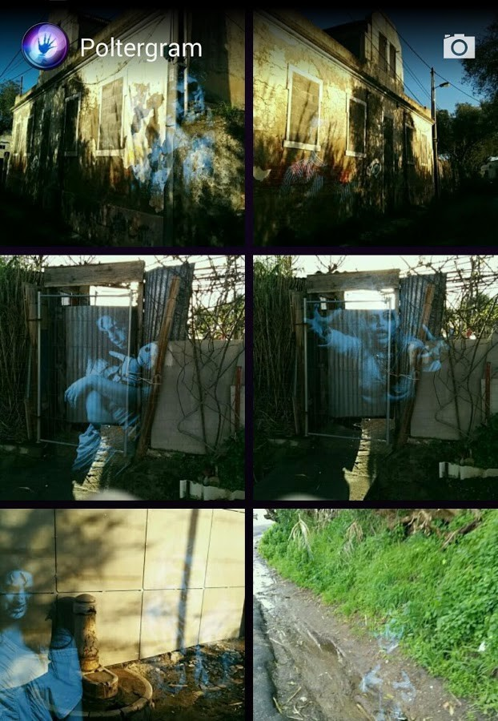

It's getting late and Santa still has lots of gifts to deliver! Guide Rudolph through the Christmas Eve and deliver gifts to all homes in your path.
There's a new track everyday, so challenge your friends and give it all you've got!
★ Daily Mode: a new track every day!
★ Random Mode: get a different track everytime you play this mode!
★ Highscores for the daily track and the best score ever.
★ Simple and fun gameplay.
★ Endless tracks with increasing difficulty.
★ Integrated share functionality to challenge your friends.
★ Authentic free-to-play model! No paywalls or in-app purchases.

Navigate your boat and skier buddy up the endless river, through tight turns and while dodging rocky obstacles.
Don't forget to pickup some fuel canisters as you go!
There's a new track everyday, so challenge your friends and give it all you've got!
★ Daily Mode: a new track every day!
★ Random Mode: get a different track everytime you play this mode!
★ Highscores for the daily track and the best score ever.
★ Simple and fun gameplay.
★ Endless river tracks with increasing difficulty.
★ Integrated share functionality to challenge your friends.
★ Authentic free-to-play model! No paywalls or in-app purchases.


Poltergram is a ghost detector camera application.
You can take pictures of your friends and see spirits interacting with them.
Use it to prank your friends or to add a scary touch to your photos.
It is a ghost in your photo prank / ghost in your picture prank !
Perfect for April fools, Carnival and Halloween!
● Instagram meet Poltergeist plus more ●
It can detect:
★ Spirits
★ Ghosts
★ Mummies
★ Dead people and murders
★ Vampires
★ Zombies .. and more to come.
The results are photos with dead people and ghostly artifacts that are all around all of us.
Not yet another ghost camera app?
Poltergram is unique from most (if not all) other ghost detector apps because the photo composition and ghost placement is all done "automagically". You don't have to manually choose ghosts and position them.. it all just happen nicely.
• Uses artificial intelligence (genetic algorithms) to compose a photo, insert ghosts and manage it with people in the picture to make sense.
• Uses facial recognition to understand how to best use people in the photos.
• Also, can work with people-less photos and compose a photo with amazing composition and great results.